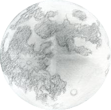

<div class="work-description">
    <p>This project was a gift for a friend. I wanted to capture the beginning of our friendship, a time in which we often texted each other about ideas and the moon. To capture the energy and feeling of this moment in our friendship, I made a website.
        <p> It shows a hand holding an i-phone in front of the night sky. In the sky you can see the moon (depicted in it's current phase) and twinkling stars. The website pulls from the weather underground API to accurately represent the moon's current phase. The stars aren't "just" stars. If you click on one, a text message conversation will appear on the phone. The texts will be from a day in 2015 when the moon was the same phase as it right now.</p>
</div>

